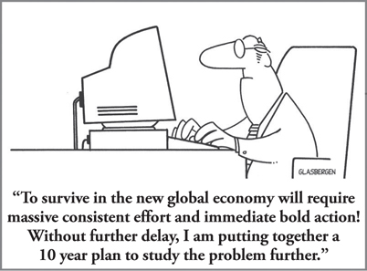

CHAPTER 16
The Essential Shift to Strategic Thinking: Making Strategic Planning Pay Off

CHAPTER HIGHLIGHTS
 In most organizations, more emphasis is placed on strategic planning, while the importance of strategic thinking is overlooked.
In most organizations, more emphasis is placed on strategic planning, while the importance of strategic thinking is overlooked.
 Effective strategic planning requires an ability to think strategically.
Effective strategic planning requires an ability to think strategically.
 Strategic thinking draws primarily on D-quadrant mental processes, while strategy and strategic planning are Whole Brain processes.
Strategic thinking draws primarily on D-quadrant mental processes, while strategy and strategic planning are Whole Brain processes.
 Creative thinking and strategic thinking are mental cousins. Since there are proven ways of tapping into and unleashing an individual’s creative potential, there are also steps you can take to build your strategic thinking potential.
Creative thinking and strategic thinking are mental cousins. Since there are proven ways of tapping into and unleashing an individual’s creative potential, there are also steps you can take to build your strategic thinking potential.
GE’s corporate executive office had commissioned me to develop a strategic planning program as part of the effort to get GE’s culture to approach business more strategically. In response, my executive education colleagues had developed a weeklong workshop directed at the company’s top 200 general managers and planning executives. A short time later, the CEO requested a shorter program for the 10,000 downline managers in the company who needed to understand strategic planning in order to further this planned cultural change. While the program I developed was judged very successful, my sense that I had somehow missed the mark persisted. I didn’t feel that the program fully conveyed what the strategic thinking part of strategic planning really means, but I couldn’t figure out what I should have done instead. It took Henry Mintzberg’s article1 on how people could be smart and dull at the same time to provide the first clue.
First, it is useful to understand that strategic planning differs mentally from operational planning. Operational planning requires more structure and deals with facts, logic, analysis, sequence, detail, time, history, process, and procedure. In strategic planning, which is more experimental, we need strategic thinking, which deals with vision, insight, inference, intuition, trends, patterns, integration, synthesis, projections, risk, and global thinking.
Since none of us had thought about the mental differences between operational planning and strategic planning, neither the content nor the delivery of the workshop took into account the critical shift required from the more risk-averse, safekeeping, lower-left B-quadrant modes called for in operational planning to the riskier, experimental, upper-right D-quadrant modes that were crucial to strategic planning. Unwittingly, we had largely ignored the right-mode quadrants. From beginning to end, the strategic planning workshops and programs emphasized A- and B-quadrant processes and techniques while overlooking major aspects of the C- and D-quadrant thinking modalities that were required to build a truly strategic plan.
Even more crucially, we had greatly underestimated the learning challenge that was inherent not only in this short program, but also in the entire cultural shift required for success. Any move away from a preferred or primary thinking mode to an area of secondary (mid-level) or even tertiary (low) preference sharply heightens the demand on a person’s mental energies, especially if the person’s normal operating mode happens to be diagonally opposite to the material being taught. Since the vast majority of the people participating in these programs had strong preferences for the logical, analytical, rational, and operational planning modes, it was an enormous leap for them to comprehend strategic thinking and planning, let alone learn how to implement it.
Chuck McVinney,2 who often conducts Whole Brain Strategic Thinking workshops with our clients, suggests that it’s particularly difficult to think strategically when you’re “mired in the swamp” of today’s issues and short-term goals. He notes that there is a seemingly universal resistance to long-term thinking because today’s problems are so complex and all-consuming. Leaders and managers can get away with staying focused on the short term because the organizational culture—and the stock market—are so fixated on the immediate numbers and priorities, that the tendency is to become more reactive than proactive. They stay in the safekeeping mode because it fits today’s needs and, often, because it’s a mental comfort zone for management. The business’s long-term success suffers as a result.
Strategic Thinking Must Precede Strategic Planning
Strategic planning, when well done, is a Whole Brain process and is not a walk in the park. It’s actually a pretty difficult process that requires a great deal of homework, scanning of the environment and competitors, attempting to “see around corners,” and analysis of and research into customers’ needs—not only those needs that are already articulated and served, but also those needs that are unarticulated and as yet unserved. In the typical situation, senior executives plunge into strategic planning because “it’s the thing to do,” without ever really stopping to define it or ask themselves what it is or how to do it, let alone what the thinking requirements should be or how to shift their thinking to best engage that thinking. As a matter of fact, there aren’t too many senior executives who actually know what an effective and truly strategic plan is and how to best differentiate it from an operating plan. Strategic plans deal with the future, with products, with markets, with customers, and with the business environment in which those markets and customers are served. There are a number of outstanding experts on strategic planning. In contrast, there are very few on strategic thinking.
This isn’t just about semantics. The two are very different, and strategic thinking must precede any attempt to create a strategic plan. Strategic thinking is a mindset that allows you to:
• Anticipate, invent, and understand potential future events and issues.
• Imagine and create alternative scenarios.
• Destroy your preassumptions to free up new perspectives on your business.
Then, and only then, can you:
• Assess and understand your options.
• Decide on your objectives.
• Determine the direction to take to achieve those objectives on a winning basis.
Beyond the strategic plan, strategic thinking as a competency has become an even more critical part of day-to-day decision making. The continual shifts and changes in the environment—external and internal, those that we can control and those that we can’t—mean that the skill of strategic thinking is essential for staying fast, flexible, and ahead of the curve. It’s a skill that we need to be developing in ourselves and in our leaders and employees at all levels, even if they are not part of the formal strategic planning process, since the pace of change is affecting everyone and decisions are being made much closer to the customer.
While successful long-term organizational strategy requires all four quadrants, strategic thinking is largely a D-quadrant process (see Figure 16-1). Strategic thinking deals in futures, in patterns, in trends, and in nuances that require an ability to sense emerging strategies in the middle of daily business chaos. It deals more in fuzzy logic than in the kind of logic that we use to analyze and diagnose. Whereas key segments of a strategic plan can be described in facts and quantified in numbers, strategic thinking is best revealed in concepts, visuals, and metaphors, and through creative thinking and intuitive flashes. This requires tapping into our highly perceptive nonverbal brain, using mind hacks and other techniques like visualization, creative model building, doodling, and sketching. Most strategic plans have a visible structure and sequence; strategic thinking is largely conceptual and starts with the end in mind.
FIGURE 16-1 Understanding the differences between strategic thinking and strategic planning. HBDI pro-forma profiles for operational planning, strategic planning, strategic thinking, and customer-centric planning.
How, then, do executives and managers who are trained in the reality of the here and now, who quantify with facts and numbers and live in analytics, make sense out of something that feels like a cloud of smoke or a handful of air? Well, it takes a totally different mindset, and you don’t acquire it just by reading about it. In my experience, most managers and leaders need to go through a transition stage. They need to metamorphose into a mental state in which they place the same value on the insights emerging from a nontraditional conceptual, metaphorical model as they would on a spreadsheet of production numbers or on the diagnosis of a customer’s annual report.
Once there is buy-in to the process and the transition takes place, a wealth of untapped new thinking suddenly starts to emerge, and breakthroughs occur. A senior team from a global semi-conductor company worked through a metaphorical process in which it used animals to describe the company’s various stakeholders. When the distributors were described as snakes, sloths, and similar animals, the group suddenly realized that the company was overlooking a great opportunity and that the best strategic option for increasing its market share was readily available: tapping into the distributor base, which the company had been treating as substandard, “backup” customers. As the group looked at the future market opportunities, this approach was forward thinking and a competitive advantage for the firm. Had they not been open to the notion of using metaphors, they would never have uncovered that option.
Eight Processes for Transitioning to Strategic Thinking
From my experience working with a large number of managers and senior executives who have been in the midst of making this metamorphosis, I’ve noted the following processes as essential steps on the path of transition:
1. Know your preferences. Strategic thinkers must understand their own mentality. That is, they need to know the reality of their own thinking preferences, which lead to their everyday business behaviors. Managers and leaders are often capable of doing certain things very successfully, and at the same time totally incapable of doing other things. For example, there are some very successful business managers who cannot fathom an annual report or, for that matter, a financial statement. Others do not have the ability to develop a strategy, or even to understand what a strategy is. To understand strategic thinking, you need to first know what your thinking baseline is.
2. Define strategic thinking. A clear definition of strategic thinking must be understood and accepted in order to help leaders access it. Most organizations have a process in place for strategic planning. Revisiting this process to clarify the strategic thinking components needed is a critical step. For those managers who are looking to build their strategic thinking muscle, it is important to set the context for the what, the how, and the why of strategic thinking as a competency and its implications for their role and their decision-making approaches.
3. Stretch to and leverage D-quadrant thinking. Whatever their profile of mental preferences, strategic thinkers must be able to make use of their D-quadrant mental capabilities, at least situationally. They must have a sense of the future. They must be able to take a risk. They must be able to perceive patterns. They must be able to deal with ambiguities. They must be able to think in metaphors. They must be able to visualize. And, of course, they must be able to think holistically—that is, see the big picture and scan the environment. And they must be able to access, respect, be aware of, and trust the validity of their own intuition.
All these capabilities are available to each of us in our existing array of mental options, but usually in different degrees. It’s likely that we used these mental processes as children, but we began to be talked out of their validity by our parents and teachers, and then by all the other influential people throughout our life. These forms of mental processing are not typically strongly advocated in the business environment, but many successful CEOs use them frequently, whether they are aware of it or not.
For example, on a major transaction such as an acquisition, when the time for a final decision arrives and all the facts are in, all the spreadsheets have been diagnosed and analyzed, and all the staff work has been done, the CEO often leaves the cluttered boardroom and takes a short break outside the room, say on the balcony or someplace else where he or she can get some perspective. After a few minutes, the CEO comes back and says, “We’re gonna go!” There are no new facts. There is no brilliant new financial diagnosis. That decision is based on an instant holistic review of all the factors involved, and an intuitive conclusion to take action.
4. Get uncomfortable. Strategic thinkers need to be open to new ways of thinking and learning that at first may feel silly or uncomfortable. Doing so allows them to get smart in areas where they are currently somewhat dumb, even if what they are doing does not look or feel “smart” to them at the time. There are proven ways of tapping into and unleashing creative and strategic potential, for accessing previously self-censored intuition, and for seeing patterns to gain clarity of vision.
5. Use metaphors. A critically important thinking process that might seem ridiculous to a bright MBA is to think metaphorically. Metaphors are a terrific way to tap into the brain’s insights that are most difficult to express in words. One of my valued colleagues, Ayn Fox,3 developed a process years ago in which participants in a learning session select a toy or creative item as an object that has attributes that describe themselves. For example, “I am like this kaleidoscope because I have many facets of interest that constantly change.” Or, “I am like this electronic plasma sculpture because I, too, radiate energy in all directions, and when I come in contact with others, this energy is often transferred to them.” The metaphors would inevitably provide aha moments that would surprise the individual as he or she described it, in terms of both the accuracy and the degree of insight that they provided.
I adapted an idea from the Wharton School to use “car metaphors” to reveal a person’s attitude about a company, a customer, or a situation (see Figure 16-2). This powerful exercise is done by drawing little basic sketches (even stick figures are fine) of imaginary cars or other vehicles that reveal the type and/or model (for example, sports car, sedan, Toyota Prius, Dodge Minivan, BMW, school bus, tank, or spaceship), how it is accessorized, and the environment it’s in. In ways that words often can’t express, these sketches clearly bring to bear a person’s point of view with respect to his or her own company and a competitor, or to the company today and 10 years in the future. They reveal unarticulated thoughts that are otherwise very difficult to access and are extremely useful when thinking strategically.
Another technique is to select an animal for its characteristics as a representation of the company, a customer, or a competitor (for example, an eagle, a tiger, or a snake), as the semiconductor company did. A variation is to write a story about being that animal as it relates to the world in general, or as it relates specifically to your competitor or customer. Important insights and nuances are revealed as the choice of animal and story are shared with others.
These few examples of the use of metaphors demonstrate that it is extremely powerful and extraordinarily successful. Through practice, metaphorical thinking can become an important pathway to hitherto unused mental insights and skills.
6. Build models to tap into your innate creativity and gain strategic insight. One of the most effective techniques for accessing strategic thinking is what I call “creative modeling.” This is the use of creative materials to build a model of an organization or an entire company that portrays the most significant attributes of that organization. This is not a literal model that looks like the headquarters building, but rather a metaphorical construction that reveals attributes that have not been previously articulated.
Imagine for a moment building a creative metaphorical model of your company, and alongside it building a model of your key customer. In between the two models are the connections (or absence of connections) that represent the relationships you have with your key customer. In the many hundreds of times that I have used this technique, I cannot recall a single instance in which the model maker did not discover something new and important—most often of strategic importance—about either the company or the key customer. The process is so engaging and so much fun that before you know it, you have selected a piece of creative material and assembled it in such a way that it reveals something important that you never thought of before. That is only one aspect of the power of this technique, which allows you to think three-dimensionally about any given situation.
7. Understand the mentality of your culture. As discussed in detail in Chapter 15, another insightful process that we have used is diagnosing and developing the HBDI pro-forma profile of a company’s culture, annual report, vision statement, mission statement, and statement of core values. The profiles are then analyzed in terms of their alignment with one another and with the corporate culture as well as with the HBDI Profiles of key leaders and functions. This process often triggers insights about your current state. You can then use the profile to describe the desired future state, providing another way to articulate perspectives that are often hard to verbalize.
8. Step out into the future. This involves bringing your team together and having them try to visualize (using a guided visualization or other techniques) themselves as individuals and as the business as a whole, 5 to 10 years into the future. They then reflect and capture their thoughts on the company’s vision, mission, products, markets, and customer expectations, and discuss each person’s perspectives and the implications and consequences of building out into the future.
If even the idea of a visualization or guided fantasy makes you uncomfortable, here’s an approach that Chuck McVinney uses with research leaders and others who work in technical, scientific, or highly structured fields and have trouble being visionary or tapping into their imagination: instead of having someone imagine the future—an exercise that might come easily to an individual with a strong D-quadrant preference, but could be mentally draining for someone who prefers highly analytical and logical thinking—he asks the person to step into that point in the future and then analyze the history that led him or her to it. Rather than feeling blocked by the struggle to imagine the future, the person can focus on solving an analytical problem: How did we get here? What steps were involved? What made this successful? Once a person’s own mental barriers are down, strategic thinking becomes much easier and more enjoyable to do.
FIGURE 16-2 Two examples of vehicle metaphor drawings revealing different views from differing perspectives—the company in the future (left) and the company today (right).
As you can see, these are not the usual types of management activities, such as gathering and analyzing data. The techniques are so indirect that they seem like a back road, but in reality they represent a shortcut to attaining the perceptions needed to think strategically and subsequently build a strategic plan. What look like clouds of smoke that you can’t grab are actually elements of solid understanding that defy rational processing. Among the people who have experienced these techniques for themselves, successful results—and conversion to believers—is close to 100 percent.
A whole spectrum of similar activities makes up a universe of techniques that facilitate strategic thinking processes. Mixing, matching, and sequencing them to apply to different business situations can make the transition of traditional thinkers to strategic thinkers a more likely outcome. The fresh perspectives that are gained through this transformation greatly benefit the more formal strategic planning processes that follow. The individuals involved are now much more sensitive to patterns, trends, nuances, and unarticulated needs and opportunities. They are able to better conceptualize and visualize existing relationships and future projections. They are, in a word, smarter about the process of strategic thinking and its follow-on action step, strategic planning.
 Strategic planning is a difficult process that often doesn’t work because the strategic thinking mentality needed to conduct it is not understood and therefore not practiced.
Strategic planning is a difficult process that often doesn’t work because the strategic thinking mentality needed to conduct it is not understood and therefore not practiced.
 Many very capable executives are not very smart in the strategic domain, but they can develop skills through an application of Whole Brain Thinking.
Many very capable executives are not very smart in the strategic domain, but they can develop skills through an application of Whole Brain Thinking.
 Experts in strategic thinking have special techniques that provide effective D-quadrant training to help executives who are not familiar with this mode to stretch and develop strategic thinking skills.
Experts in strategic thinking have special techniques that provide effective D-quadrant training to help executives who are not familiar with this mode to stretch and develop strategic thinking skills.
 The level of success using these techniques with executives is very high when positioned in a way that executives understand.
The level of success using these techniques with executives is very high when positioned in a way that executives understand.
 While strategic planning is a Whole Brain process, awareness, familiarity, and particularly skill in D-quadrant strategic thinking are important ingredients in effective strategic planning.
While strategic planning is a Whole Brain process, awareness, familiarity, and particularly skill in D-quadrant strategic thinking are important ingredients in effective strategic planning.